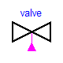
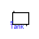
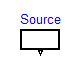
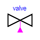
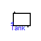
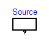
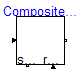
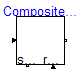
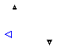

 


| Name | Description |
|---|---|
| TankController | Controller for tank system |
| MakeProduct | |
| inflow | Inflow connector (this is a copy from Isolde Dresslers master thesis project) |
| outflow | Outflow connector (this is a copy from Isolde Dresslers master thesis project) |
| valve | Simple valve model (this is a copy from Isolde Dresslers master thesis project) |
| Tank | Simple tank model (this is a copy from Isolde Dresslers master thesis project) |
| Source | Simple source model (this is a copy from Isolde Dresslers master thesis project) |
| CompositeStep | |
| CompositeStep1 | |
| CompositeStep2 |
Modelica.StateGraph.Examples.Utilities.CompositeStep
| Name | Default | Description |
|---|---|---|
| Exception connections | ||
| nSuspend | 1 | Number of suspend ports |
| nResume | 1 | Number of resume ports |
model CompositeStep
extends StateGraph.PartialCompositeStep;
Transition transition3(
enableTimer=true, waitTime=1);
Transition transition4(
enableTimer=true, waitTime=1);
Step step3;
Step step4;
Transition transition5(
enableTimer=true, waitTime=2);
Transition transition6(
enableTimer=true, waitTime=2);
Transition transition4a(
enableTimer=true, waitTime=1);
Step step4a;
Transition transition6a(
enableTimer=true, waitTime=2);
Step initStep;
Step exitStep;
Alternative Alternative1(
nBranches=3);
equation
connect(transition3.outPort, step3.inPort[1]);
connect(step3.outPort[1], transition5.inPort);
connect(transition4.outPort, step4.inPort[1]);
connect(step4.outPort[1], transition6.inPort);
connect(transition4a.outPort, step4a.inPort[1]);
connect(step4a.outPort[1], transition6a.inPort);
connect(initStep.inPort[1], inPort);
connect(exitStep.outPort[1], outPort);
connect(initStep.outPort[1], Alternative1.inPort);
connect(Alternative1.outPort, exitStep.inPort[1]);
connect(transition3.inPort, Alternative1.split[1]);
connect(transition4.inPort, Alternative1.split[2]);
connect(transition4a.inPort, Alternative1.split[3]);
connect(transition5.outPort, Alternative1.join[1]);
connect(transition6.outPort, Alternative1.join[2]);
connect(transition6a.outPort, Alternative1.join[3]);
end CompositeStep;
| Name | Default | Description |
|---|---|---|
| Exception connections | ||
| nSuspend | 1 | Number of suspend ports |
| nResume | 1 | Number of resume ports |
model CompositeStep1
extends PartialCompositeStep;
Transition transition1(
enableTimer=false,
waitTime=0,
condition=time > 8);
Step initStep;
Step exitStep;
CompositeStep2 compositeStep11(
waitTime=3);
CompositeStep2 compositeStep12(
waitTime=2);
Transition transition2(
condition=time > 4,
enableTimer=false,
waitTime=0);
Transition transition3(
enableTimer=false, waitTime=0);
Transition transition4(
enableTimer=false, waitTime=0);
Alternative Alternative1;
equation
connect(exitStep.outPort[1], outPort);
connect(initStep.inPort[1], inPort);
connect(transition1.outPort, compositeStep11.inPort);
connect(transition2.outPort, compositeStep12.inPort);
connect(compositeStep11.outPort, transition3.inPort);
connect(compositeStep12.outPort, transition4.inPort);
connect(initStep.outPort[1], Alternative1.inPort);
connect(Alternative1.outPort, exitStep.inPort[1]);
connect(transition1.inPort, Alternative1.split[1]);
connect(transition2.inPort, Alternative1.split[2]);
connect(transition3.outPort, Alternative1.join[1]);
connect(transition4.outPort, Alternative1.join[2]);
end CompositeStep1;

| Name | Default | Description |
|---|---|---|
| limit | 0.98 | Limit level of tank 1 |
| waitTime | 3 | Wait time |
model TankController "Controller for tank system"
extends StateGraph.Interfaces.PartialStateGraphIcon;
parameter Temporary.SetRealParameter limit = 0.98 "Limit level of tank 1";
parameter Temporary.SetRealParameter waitTime = 3 "Wait time";
InitialStep s1(
nIn=2);
MakeProduct makeProduct(
limit=limit, waitTime=waitTime);
Transition T1(
condition=start);
Transition T2(
condition=level2<0.001);
Transition T3(
condition=stop);
Step s2(
nOut=2);
Transition T4(
condition=start);
Transition T5(
condition=shut);
Step emptyTanks;
Transition T6(
condition=level1+level2<0.001);
Modelica.Blocks.Interfaces.BooleanInput start;
Modelica.Blocks.Interfaces.BooleanInput stop;
Modelica.Blocks.Interfaces.BooleanInput shut;
Modelica.Blocks.Interfaces.RealInput level1;
Modelica.Blocks.Interfaces.RealInput level2;
Modelica.Blocks.Interfaces.BooleanOutput valve1;
Modelica.Blocks.Interfaces.BooleanOutput valve2;
Modelica.Blocks.Interfaces.BooleanOutput valve3;
Modelica.Blocks.Sources.BooleanExpression setValve1(
y=makeProduct.fillTank1.active);
Modelica.Blocks.Sources.BooleanExpression setValve2(
y=makeProduct.fillTank2.active or emptyTanks.active);
Modelica.Blocks.Sources.BooleanExpression setValve3(
y=makeProduct.emptyTank2.active or emptyTanks.active);
equation
connect(s1.outPort[1], T1.inPort);
connect(T1.outPort, makeProduct.inPort);
connect(makeProduct.outPort, T2.inPort);
connect(T5.outPort, emptyTanks.inPort[1]);
connect(emptyTanks.outPort[1], T6.inPort);
connect(setValve1.y, valve1);
connect(setValve2.y, valve2);
connect(setValve3.y, valve3);
connect(makeProduct.suspend[1], T3.inPort);
connect(T3.outPort, s2.inPort[1]);
connect(T4.outPort, makeProduct.resume[1]);
connect(level1, makeProduct.level1);
connect(s2.outPort[1], T5.inPort);
connect(s2.outPort[2], T4.inPort);
connect(T2.outPort, s1.inPort[1]);
connect(T6.outPort, s1.inPort[2]);
end TankController;

| Name | Default | Description |
|---|---|---|
| A | 1 | ground area of tank in m² |
| a | 0.2 | area of drain hole in m² |
| hmax | 1 | max height of tank in m |
model Tank
"Simple tank model (this is a copy from Isolde Dresslers master thesis project)"
Modelica.Blocks.Interfaces.RealOutput levelSensor;
inflow inflow1;
outflow outflow1;
Real level "Tank level in % of max height";
parameter Real A=1 "ground area of tank in m²";
parameter Real a=0.2 "area of drain hole in m²";
parameter Real hmax=1 "max height of tank in m";
constant Real g=Modelica.Constants.g_n;
equation
der(level) = (inflow1.Fi - outflow1.Fo)/(hmax*A);
if outflow1.open then
outflow1.Fo = sqrt(2*g*hmax*level)*a;
else
outflow1.Fo = 0;
end if;
levelSensor = level;
end Tank;

model valve "Simple valve model (this is a copy from Isolde Dresslers master thesis project)" Modelica.Blocks.Interfaces.BooleanInput valveControl; inflow inflow1; outflow outflow1; equation outflow1.Fo = inflow1.Fi; outflow1.open = valveControl; end valve;

| Name | Default | Description |
|---|---|---|
| maxflow | 1 | maximal flow out of source |
model Source
"Simple source model (this is a copy from Isolde Dresslers master thesis project)"
outflow outflow1;
parameter Real maxflow=1 "maximal flow out of source";
equation
if outflow1.open then
outflow1.Fo = maxflow;
else
outflow1.Fo = 0;
end if;
end Source;
| Name | Default | Description |
|---|---|---|
| limit | 0.98 | Limit level of tank 1 |
| waitTime | 3 | Wait time |
| Exception connections | ||
| nSuspend | 1 | Number of suspend ports |
| nResume | 1 | Number of resume ports |
model MakeProduct
extends StateGraph.PartialCompositeStep;
parameter StateGraph.Temporary.SetRealParameter limit = 0.98
"Limit level of tank 1";
parameter StateGraph.Temporary.SetRealParameter waitTime = 3 "Wait time";
Modelica.Blocks.Interfaces.RealInput level1;
Step fillTank1;
Transition T1(
condition=level1 > limit);
Step fillTank2;
Transition T3(
condition=level1 < 0.001);
Step emptyTank2;
Step wait1;
Transition T2(
enableTimer=true, waitTime=waitTime);
Step wait2;
Transition T4(
enableTimer=true, waitTime=waitTime);
equation
connect(fillTank1.inPort[1], inPort);
connect(fillTank1.outPort[1], T1.inPort);
connect(fillTank2.outPort[1], T3.inPort);
connect(emptyTank2.outPort[1], outPort);
connect(wait1.outPort[1], T2.inPort);
connect(T2.outPort, fillTank2.inPort[1]);
connect(T1.outPort, wait1.inPort[1]);
connect(wait2.outPort[1], T4.inPort);
connect(T3.outPort, wait2.inPort[1]);
connect(T4.outPort,emptyTank2.inPort[1]);
end MakeProduct;
Modelica.StateGraph.Examples.Utilities.inflow
connector inflow
"Inflow connector (this is a copy from Isolde Dresslers master thesis project)"
import Units = Modelica.SIunits;
Units.VolumeFlowRate Fi "inflow";
end inflow;
Modelica.StateGraph.Examples.Utilities.outflow
connector outflow
"Outflow connector (this is a copy from Isolde Dresslers master thesis project)"
import Units = Modelica.SIunits;
Units.VolumeFlowRate Fo "outflow";
Boolean open "valve open";
end outflow;
Modelica.StateGraph.Examples.Utilities.CompositeStep2
| Name | Default | Description |
|---|---|---|
| waitTime | 2 | waiting time in this composite step |
| Exception connections | ||
| nSuspend | 1 | Number of suspend ports |
| nResume | 1 | Number of resume ports |
model CompositeStep2
extends PartialCompositeStep;
Transition transition(
enableTimer=true, waitTime=waitTime);
Step initStep;
Step exitStep;
parameter Temporary.SetRealParameter waitTime = 2
"waiting time in this composite step";
equation
connect(exitStep.outPort[1], outPort);
connect(initStep.inPort[1], inPort);
connect(initStep.outPort[1], transition.inPort);
connect(transition.outPort, exitStep.inPort[1]);
end CompositeStep2;